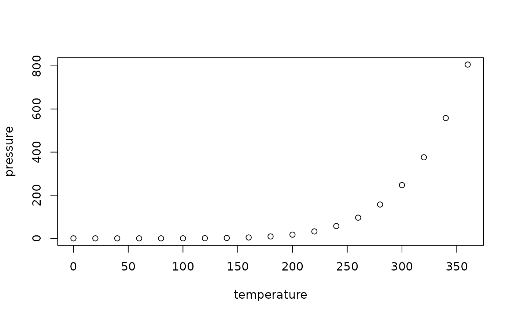

This is the equivalent of the source() function for Rmd files or
their resulting asts.
Arguments
- x
An Rmd document (e.g.
rmd_ast,rmd_tibble, Rmd file path, etc.)- local
TRUE,FALSEor an environment, determining where the parsed expressions are evaluated.FALSE(the default) corresponds to the user's workspace (the global environment) andTRUEto the environment from which source is called.- ...
Additional arguments passed to
source.- label_comment
Attach chunk labels as comment before each code block.
- use_eval
Use the
evalchunk option to determine if code is included.
Value
Returns the result of source() for any R code chunks.
Examples
rmd_source(system.file("examples/minimal.Rmd", package = "parsermd"), echo=TRUE)
#> > knitr::opts_chunk$set(echo = TRUE)
#> > summary(cars)
#> speed dist
#> Min. : 4.0 Min. : 2.00
#> 1st Qu.:12.0 1st Qu.: 26.00
#> Median :15.0 Median : 36.00
#> Mean :15.4 Mean : 42.98
#> 3rd Qu.:19.0 3rd Qu.: 56.00
#> Max. :25.0 Max. :120.00
#> > knitr::knit_patterns$get()
#> $chunk.begin
#> NULL
#>
#> $chunk.end
#> NULL
#>
#> $chunk.code
#> NULL
#>
#> $inline.code
#> NULL
#>
#> $global.options
#> NULL
#>
#> $input.doc
#> NULL
#>
#> $ref.chunk
#> NULL
#>
#> $header.begin
#> NULL
#>
#> $document.begin
#> NULL
#>
#> > plot(pressure)
